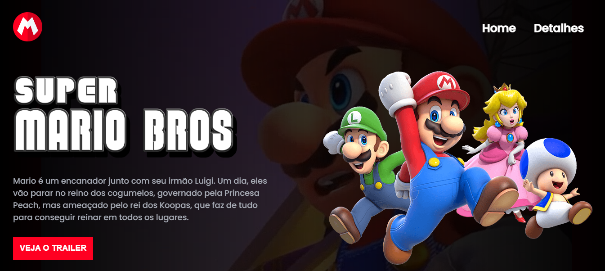

14 de Novembro de 2022
Um amor adormecido
Sempre tive um amor pela área da tecnologia, mas acabou se tornando um sonho adormecido, em Novembro de 2022 essa paixão foi reacendida e meus olhos voltaram a brilhar ao pensar na possibilidade de me especializar em programação, uma dev front-end. Desde então, com algumas batalhas internas e externas sendo superadas a cada dia que passa, com uma transição de carreira nada fácil, mas venho cada dia me dedicando mais e mais e estudando cada vez mais, para que cada dia seja 1% melhor que o dia anterior.
20 de Março de 2023
Jornada do Zero à Primeira Vaga

No dia 26/01/2023 participei do evento online: Zero à Primeira Vaga pelo canal Dev em Dobro, onde foi desenvolvido um site web responsivo do Super Mario Bros, utilizando as linguagens de HTML5, CSS3 e Javascript. Foi uma experiência única e muito prazerosa, a cada linha de código meus olhos brilhavam de felicidade, ao termino da semana do Zero à primeira vaga, eu só tinha mais certeza que a transição de carreira tinha sido a melhor escolha que eu tinha feito.